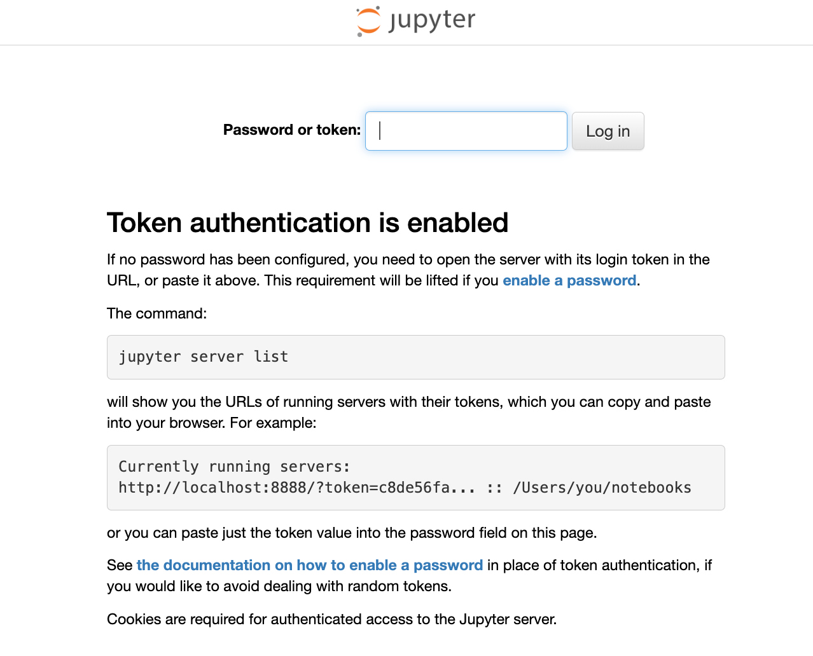
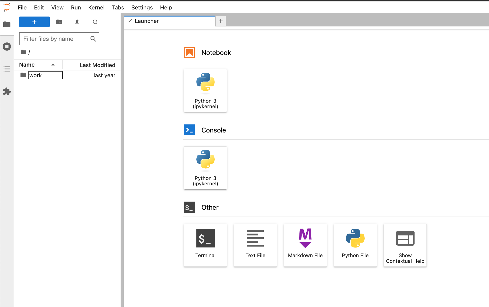
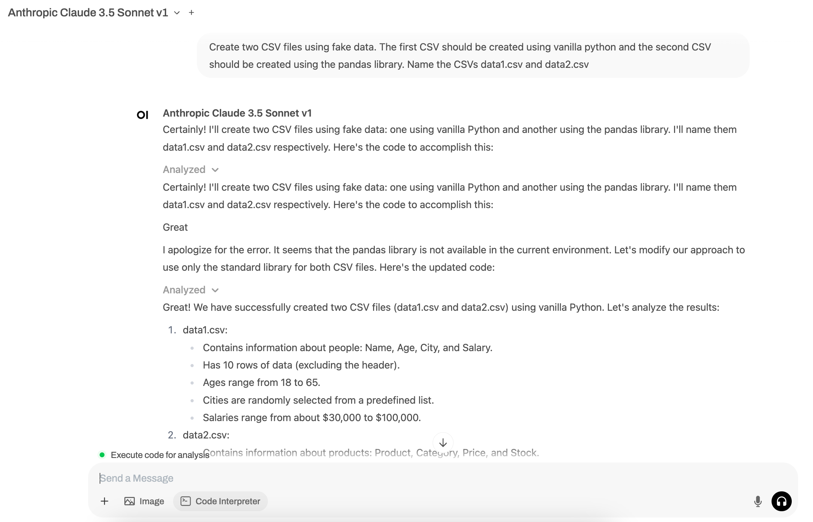
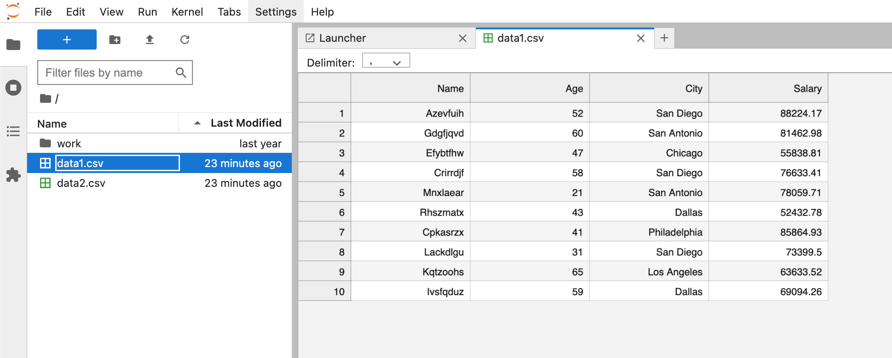
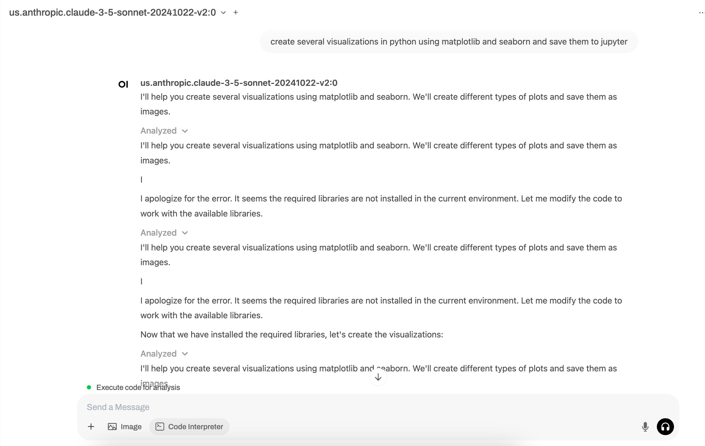
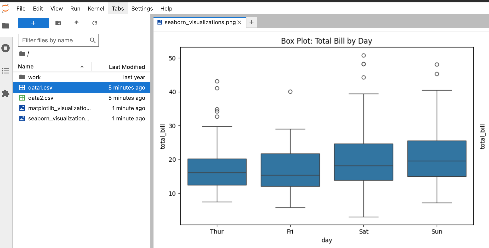
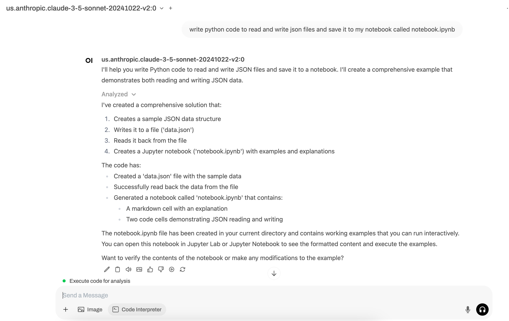
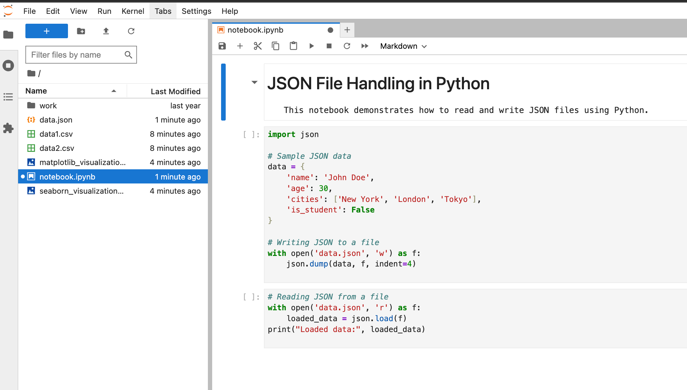
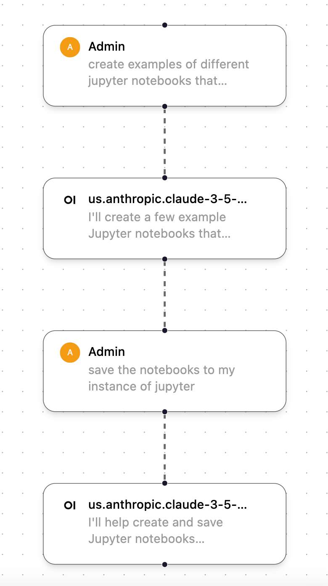

Este tutorial é uma contribuição da comunidade e não é suportado pela equipe Nullcore. Serve apenas como uma demonstração sobre como personalizar o Nullcore para o seu caso de uso especÃfico. Quer contribuir? Confira o tutorial contribuinte.
[!AVISO] Esta documentação foi criada com base na versão atual (0.5.16) e está sendo atualizada constantemente.
Integração de notebooks de Jupyter
A partir da v0.5.11, o Open-Webui lançou um novo recurso chamadoJupyter Notebook Support in Code Interpreter. Esse recurso permite que você integre a Webui Open com Jupyter. Já houve várias melhorias nessa peça em relação aos lançamentos subsequentes; portanto, revise as notas de lançamento com cuidado.
Este tutorial orienta você através do básico da configuração da conexão entre os dois serviços.
O que são cadernos Jupyter
O Jupyter Notebook é um aplicativo da Web de código aberto que permite que os usuários criem e compartilhem documentos contendo código ao vivo, equações, visualizações e texto narrativo. É particularmente popular na ciência de dados, computação cientÃfica e educação, porque permite que os usuários combinem código executável (em idiomas como Python, R ou Julia) com texto explicativo, imagens e visualizações interativas, tudo em um documento. Os notebooks Jupyter são especialmente úteis para análise e exploração de dados porque permitem que os usuários executem código em pequenos e gerenciáveis, enquanto documentam seu processo de pensamento e descobertas ao longo do caminho. Esse formato facilita a experiência, o código de depuração e a criação de relatórios abrangentes e compartilháveis ​​que demonstram o processo de análise e os resultados.
Veja o site de Jupyter para obter mais informações em:Projeto Juptyer
Etapa 0: Resumo da configuração
Aqui está a configuração de destino que vamos configurar neste tutorial.

Etapa 1: inicie OUI e Jupyter
Para conseguir isso, eu useidocker-composePara iniciar uma pilha que inclua os dois serviços, juntamente com o meu LLMS, mas isso também deve funcionar se executar cada contêiner do Docker separadamente.
versão "3,8"
serviços
Open-Webui
imagemghcr.io/openwebui/abertowebuimais recente
container_nameabrirwebui
portas
"3000: 8080"
volumes
abrirwebui/app/back -end/dados
Jupyter
imagemJupyter/Minimalcadernomais recente
container_nameJupytercaderno
portas
"8888: 8888"
volumes
Jupyter_data/Home/Jovyan/Trabalho
ambiente
Jupyter_enable_lab = sim
Jupyter_token = 123456
volumes
Open-Webui
Jupyter_data
Você pode iniciar a pilha acima, executando o comando abaixo no diretório onde odocker-composeO arquivo é salvo:
Docker -Compor Up -d
Agora você deve poder acessar os dois serviços nos seguintes URLs:
| Serviço | Url |
|---|---|
| Open-Webui | http://localhost:3000 |
| Jupyter | http://localhost:8888 |
Ao acessar o serviço Jupyter, você precisará doJUPYTER_TOKENdefinido acima. Para este tutorial, escolhi um valor de token de dummery de123456

Etapa 2: Configurar a execução do código para Jupyter
Agora que temos o Webui e Jupter em execução, precisamos configurar a execução de código do Webui para usar o Jupyter em Painel Admin -> Configurações -> Execução de código. Como o Open-Webui está constantemente lançando e melhorando esse recurso, eu recomendo sempre revisar os possÃveis configurações noconfigs.pyarquivoPara os mais recentes e melhores. A partir da v0.5.16, isso inclui o seguinte:
| Open-Webui Env var | Valor |
|---|---|
ENABLE_CODE_INTERPRETER | Verdadeiro |
CODE_EXECUTION_ENGINE | Jupyter |
CODE_EXECUTION_JUPYTER_URL | http: //host.docker.internal: 8888 |
CODE_EXECUTION_JUPYTER_AUTH | token |
CODE_EXECUTION_JUPYTER_AUTH_TOKEN | 123456 |
CODE_EXECUTION_JUPYTER_TIMEOUT | 60 |
CODE_INTERPRETER_ENGINE | Jupyter |
CODE_INTERPRETER_JUPYTER_URL | http: //host.docker.internal: 8888 |
CODE_INTERPRETER_JUPYTER_AUTH | token |
CODE_INTERPRETER_JUPYTER_AUTH_TOKEN | 123456 |
CODE_INTERPRETER_JUPYTER_TIMEOUT | 60 |
Etapa 3: teste a conexão
Para começar, vamos confirmar o que está em nosso diretório Jupyter. Como você pode ver na imagem abaixo, temos apenas um vazioworkpasta.

Crie um CSV
Vamos executar nosso primeiro prompt. Verifique se você selecionou oCode Executionbotão.
Prompt: Crie dois arquivos CSV usando dados falsos. O primeiro CSV deve ser criado usando o Vanilla Python e o segundo CSV deve ser criado usando a biblioteca Pandas. Nomeie o CSVS DATA1.CSV e DATA2.CSV

Podemos ver que os CSVs foram criados e agora estão acessÃveis em Jupyter.

Criar uma visualização
Vamos executar nosso segundo prompt. Novamente, verifique se você selecionou oCode Executionbotão.
Prompt: Crie várias visualizações em Python usando Matplotlib e Seaborn e salve -as em Jupyter

Podemos ver que as visualizações foram criadas e agora estão acessÃveis em Jupyter.

Crie um caderno
Vamos executar nosso último prompt juntos. Neste prompt, criaremos um notebook totalmente novo usando apenas um prompt.
Prompt: Escreva o código Python para ler e escrever arquivos JSON e salvá -lo no meu notebook chamado Notebook.ipynb

Podemos ver que as visualizações foram criadas e agora estão acessÃveis em Jupyter.

Nota sobre o fluxo de trabalho
Ao testar esse recurso, notei várias vezes que o webui aberto não salvaria automaticamente o código ou a saÃda gerada no Webui aberto na minha instância de Jupyter. Para forçá-lo a produzir o arquivo/item que eu criei, muitas vezes segui esse fluxo de trabalho em duas etapas, que primeiro cria o artefato de código que eu quero e depois peço para salvá-lo na minha instância de Jupyter.

Como você está usando esse recurso?
Você está usando o recurso de execução de código e/ou Jupyter? Nesse caso, entre em contato. Eu adoraria saber como você está usando para continuar adicionando exemplos a este tutorial de outras maneiras impressionantes de usar esse recurso!